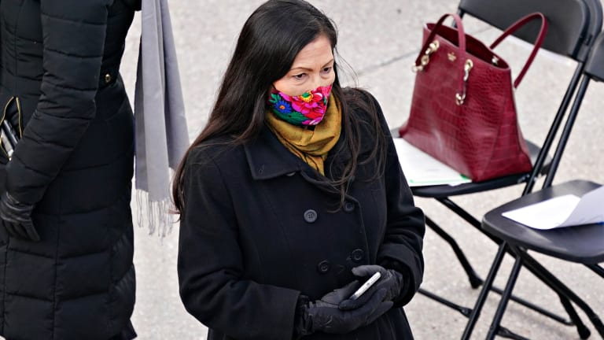
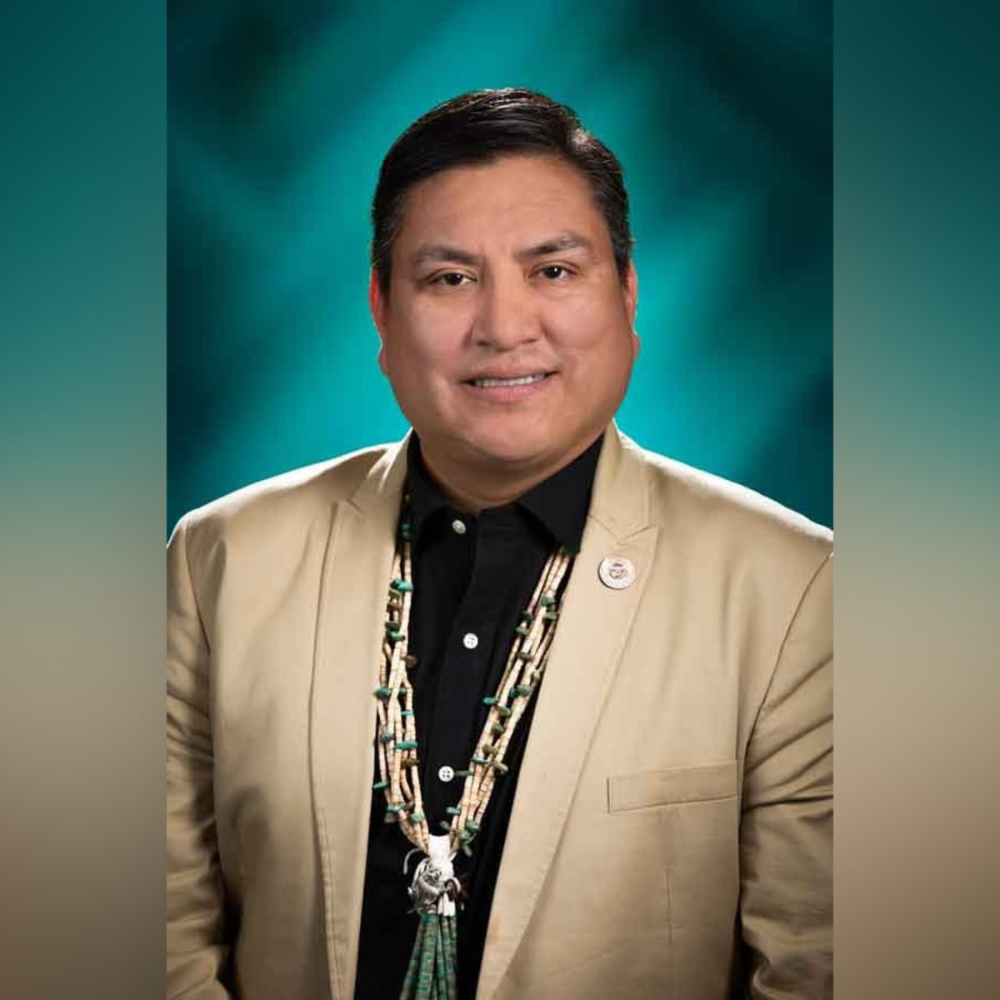
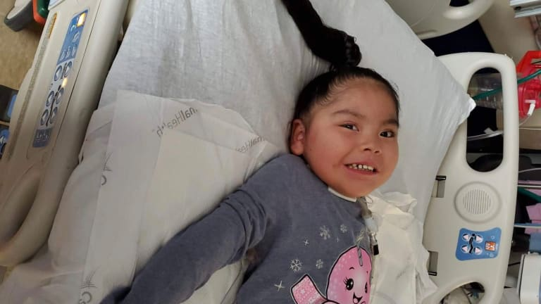
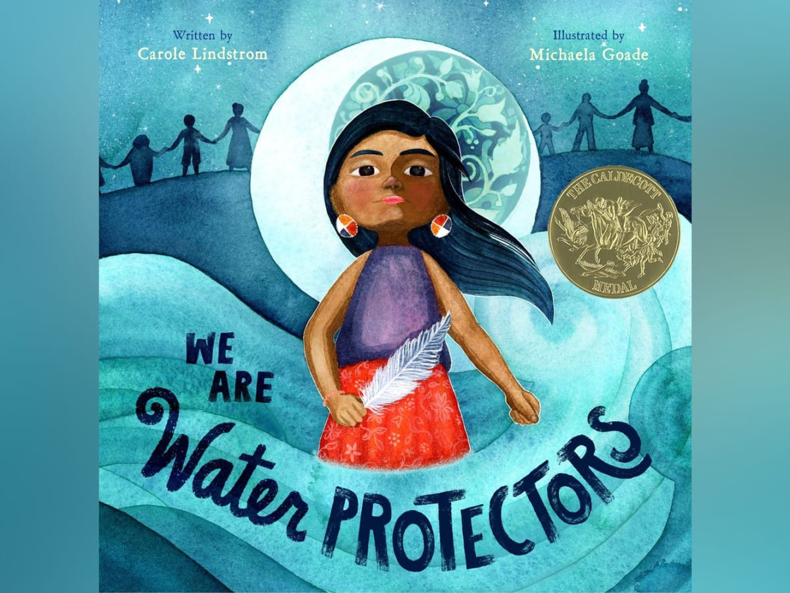
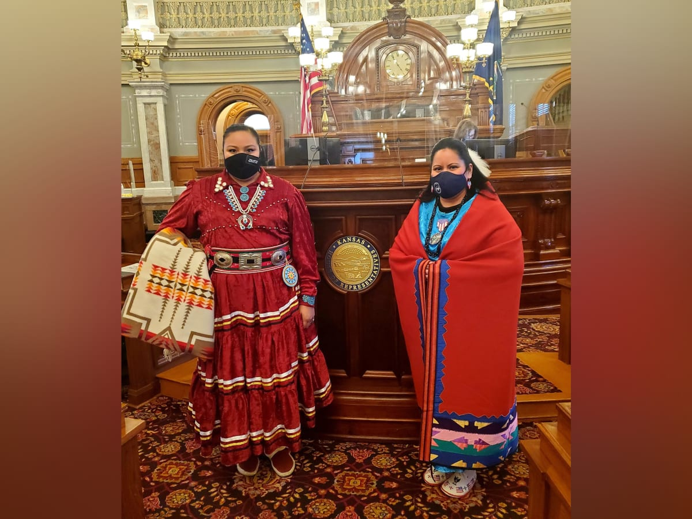

In December, New Mexico Rep. Deb Haaland was selected by President Joe Biden as his nominee to be the nation’s next Interior secretary. So what happens next?
The Senate Committee on Energy and Natural Resources will consider the nomination of Rep. Deb Haaland as U.S. Department of the Interior secretary during a hearing scheduled for Feb. 23.
A Pueblo chef is inspiring a safe Indigenous fine dining experience in New Mexico.
Sen. Brian Schatz of Hawaii as chairman will lead the Senate Committee on Indian Affairs with vice chair Sen. Lisa Murkowski
Jasmine Blackwater-Nygren, Diné, will serve as a state representative for Arizona’s district seven, filling a pivotal vacant seat in the state’s Legislature.

Former Arizona state Representative Arlando Teller, Diné, has been selected as a key member of President Joe Biden’s transportation team.

4-year-old Stella faces big challenges ahead, but that didn't stop her from winning over the hearts of caretakers at an Albuquerque hospital

A Tlingit illustrator is the winner of the 2021 Caldecott Medal, one of the most prestigious awards in children’s literature.
Robert Anderson and Ann Marie Bledsoe Downes announced as members of Interior Department under the Biden-Harris administration.
On the eve of their inauguration, President-elect Joe Biden and Vice President-elect Kamala Harris participated in an event honoring lives lost to the coronavirus pandemic.

Many lawmakers wore traditional clothing during their swearing-in ceremonies.
Lawmakers of both parties raised the prospect Thursday of removing President Donald Trump from office.